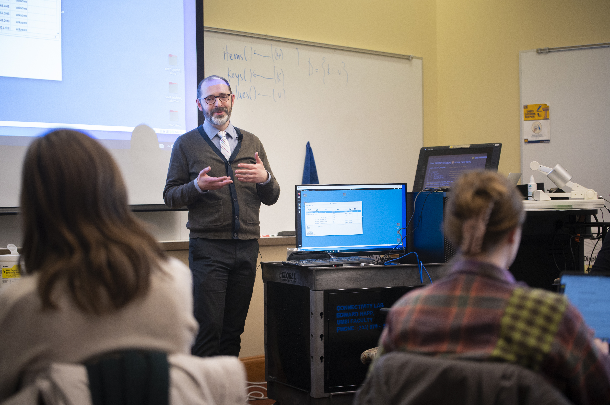

Starting Your Experience

Phase 2: Starting the Experience
Establishing professional communication, conducting initial meetings, and finalizing partnership agreements.
Value & Narrative
First impressions shape the trajectory of a partnership. The starting phase is where abstract project ideas turn into structured, professional commitments. By establishing clear team contracts, co-creating agendas, and aligning on project scope early, you build psychological safety within your team and trust with your client. Learning how to navigate early ambiguity is one of the most valuable professional capabilities you will gain at UMSI.
Focus & Objectives
- Partner Communication: Draft clear, professional outreach to launch working relationships.
- First Meetings: Structure productive kickoff meetings that define roles and project bounds.
- Formalizing Agreements: Document team commitments and scope agreements shared by all stakeholders.
Featured Resources & Handouts
- Initial Client Email Examples: Plug-and-play email templates for first contact with clients and partners.
- Initial Client Meeting Sample Agenda: Step-by-step structure for running a professional kickoff call.
- Ginsberg Center Student-Client Partnership Toolkit: Principles for building reciprocal, respectful community relationships.
- Student-Client Partnership Guide: Standard guidelines for managing expectations and deliverables.
- Student Org-ELO Partnership Agreement Template: Formal contract establishing roles between student teams and ELO.
- SO-ELL Schedule: Overview of key milestones, deadlines, and submission dates.